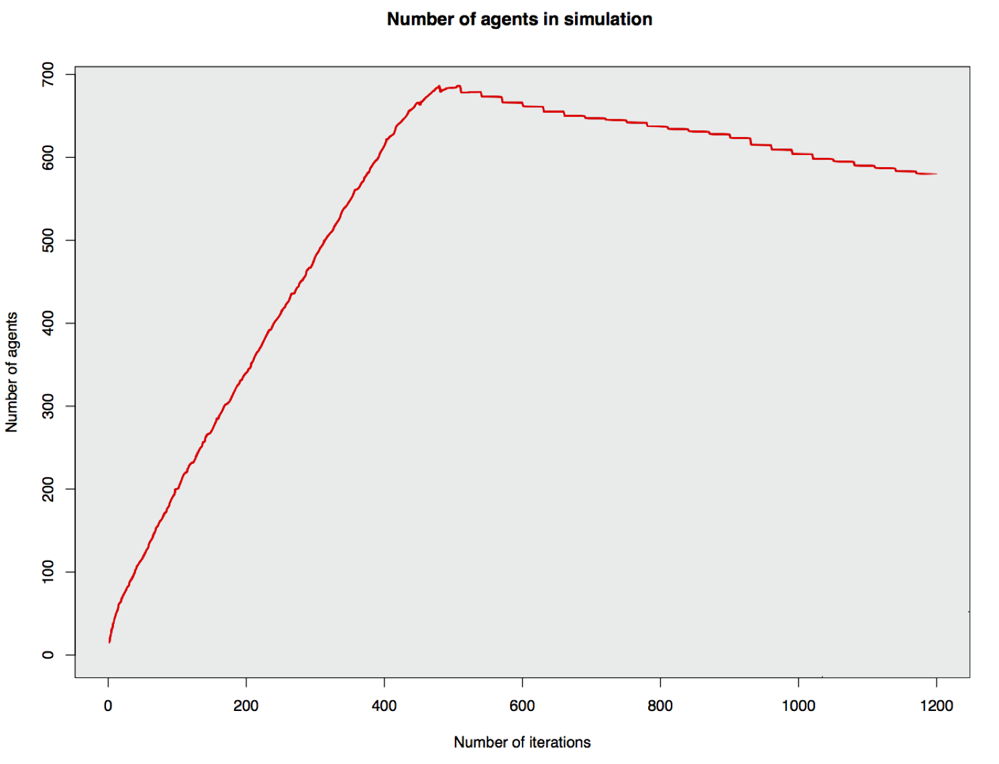
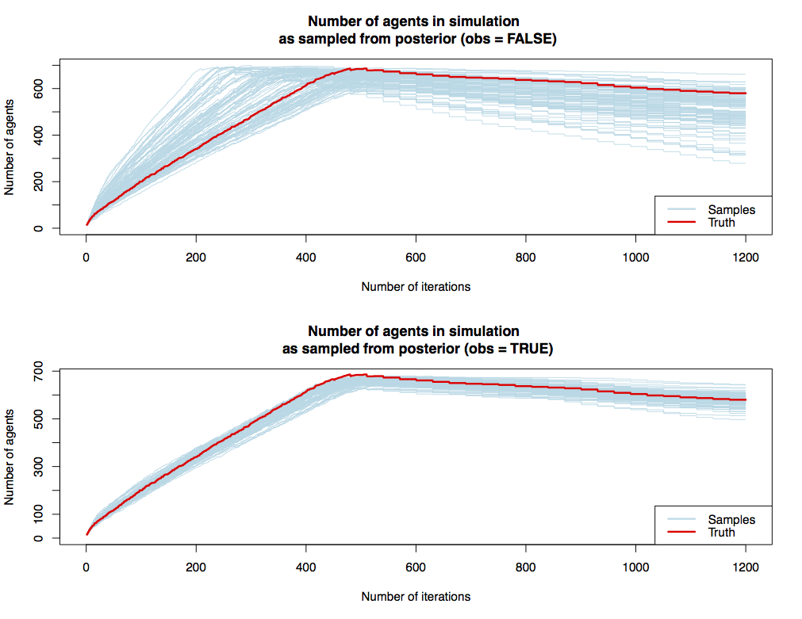
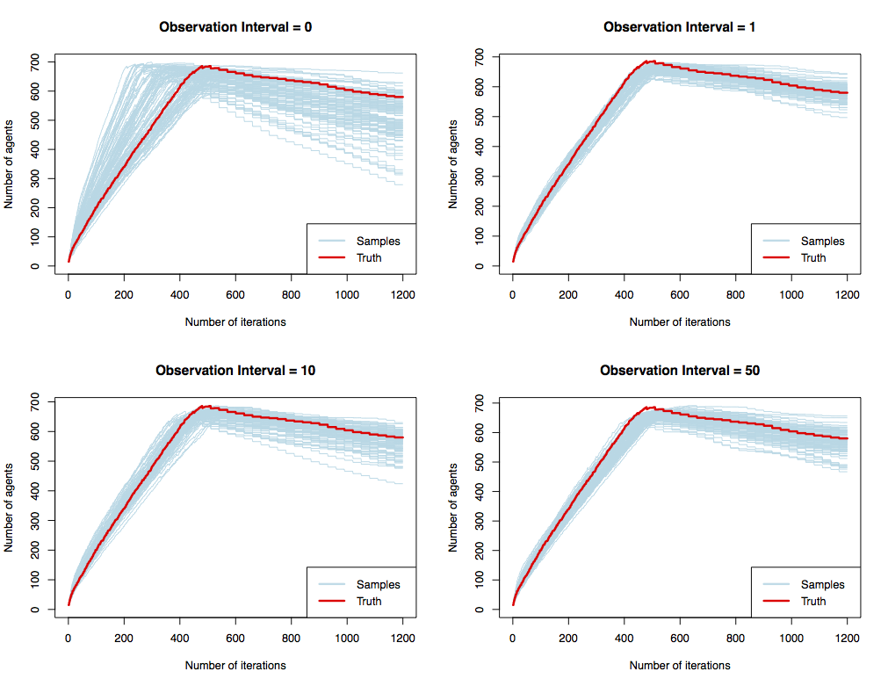

State Estimation and Data Assimilation for an Agent-Based Model using a Probabilistic Framework
Nick Malleson, Luke Archer, Minh Kieu, Jonathan A. Ward, Alison Heppenstall, Christoforos Anagnostopoulo
University of Leeds, UK
Improbable, UK
dust.leeds.ac.uk
These slides and abstract: https://urban-analytics.github.io/dust/presentations.html
How many people are there in Trafalgar Square right now?
We need to better understand urban flows:
Crime – how many possible victims?
Pollution – who is being exposed? Where are the hotspots?
Economy – can we attract more people to our city centre?
Health - can we encourage more active travel?
City Simulation
Understanding and predicting short-term urban flows
Problem: Models will Diverge
Uncertainty abounds
Inputs (measurement noise)
Parameter values
Model structure
Nonlinear models predict near future well, but diverge over time.
Possible Solution: Dynamic Data Assimilation
Used in meteorology and hydrology to constrain models closer to reality.
Try to improve estimates of the true system state by combining:
Noisy, real-world observations
Model estimates of the system state
Should be more accurate than data / observations in isolation.

Current Question:
How much data are needed to successfully model a (pedestrian) system?
Example: Crowds in a train station
We want a real-time model to forecast short-term crowding
How much data do we need?
Counts of people entering?
Counts at various points in the concourse (e.g. cameras)
Full traces of all individuals?
No crowding With crowding
Probabilistic Modelling
Use probability theory to express all forms of uncertainty
Synonymous with Bayesian modelling
Probabilistic Programming: "a general framework for expressing probabilistic models as computer programs" (Ghahramani, 2015)
By expressing the model probabilistically (i.e. with variables represented as probability distributions), we can explore the impacts of uncertainty and (importantly) begin to assimilate data.
(hopefully)
Current Progress
Work with a new probabilistic programming library (keanu).
Experiment with different amounts of observation data: how well can the probabilistic model find solutions that fit our 'real world' observations
Later:
Include all model parameters in probabilistic model, then work out their mean uncertainty (i.e. calibrate against data)
Other useful Baysean inference tasks, e.g. calculate maximum a posteriori probability (MAP) (should make for efficient sampling)
Data assimilation
Experimental setup
1. Configure the model: only input is a list of random numbers
Every time the model needs a random number, chose the next in this list
Model is stochastic with respect to these numbers
2. Choose some random numbers and run the model to generate some hypothetical truth data
Pretend that this represents a 'real' train station
3. Use the probabilistic model to find solutions that fit the observations
Can we estimate the original random numbers that were input into the model?
How many observations of the 'real' data do we need?
Model Output
Results: Sampling the posterior with and without observations
Results: Varying the number of observations
Results: Varying the number of observations
Spread of the samples
| Observation Interval | Mean Range |
|---|---|
| 0 (prior) | 254 |
| 1 | 91 |
| 5 | 130 |
| 10 | 136 |
| 50 | 116 |
Immediate Next Steps
Explain the relationship between observations and sample spread
Experiment with different types of observations, e.g.
Cameras that count the passers-by in a single place
Full traces of all agents
Basically: how much do we need to find solutions that fit the observations
Move towards data assimilation (actually adjust the state of the model while it is running in response to external data).
Conclusion
Overall aim: data assimilation for agent-based models
We want to be able to simulate cities, assimilating real time 'smart city' data as they emerge to reduce uncertainty (and prevent divergence).
Current goal: use a new probabilistic programming library to:
Experiment with the amount of data needed to simulate a system
Perform Bayesian inference on an ABM
Implement data assimilation
Opportunity: Fully-Funded PhD Scholarship (Leeds, UK)
Agent-Based Modelling of Smart Cities
Start: October 2018
Fully-funded (fees and stipend) for four years
Available to UK/EU applicants
Understanding Input Data Requirements and Quantifying Uncertainty for Successfully Modelling 'Smart' Cities
Nick Malleson, Jonathan A. Ward, Alison Heppenstall, Michael Adcock, Daniel Tang, Jonathan Coello, and Tomas Crols
Schools of Geography & Mathematics, University of Leeds, UK
Improbable, UK
dust.leeds.ac.uk
These slides: https://urban-analytics.github.io/dust/presentations.html